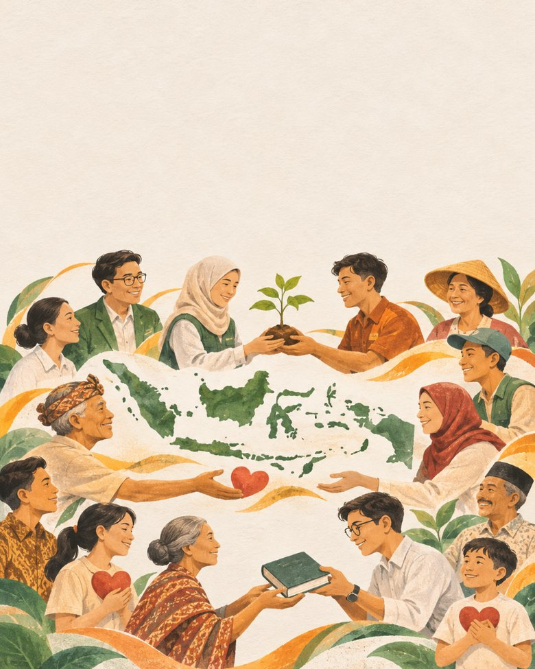

Pilih tujuan, saring bila perlu, lalu kirim siaran atau simpan · jumlah dihitung langsung dari data anggota
{{SGX.valT}} · segmen hanya memakai interest yang sudah divalidasi
{{vq.name}}{{vq.line}}{{vq.w}}
1Tujuan
2Saring lebih tepat · opsional
3Hasil
{{SG.n}}{{SG.nUnit}}{{SG.why}}Saran: {{SG.use}}
Tidak ada anggota demo di segmen ini.{{SGX.moreTxt}}
Segmen tersimpan
Dipakai di Komunikasi, Pencocokan minat, dan laporan
{{sv.name}}{{sv.meta}}
Matriks peran × klaster PFI
Angka di kiri = anggota per klaster (data klaster PFI) · klik sel untuk memuat
{{mc}}
{{mr.t}}
Satu anggota bisa ikut lebih dari satu klaster ({{SG.multi}} anggota) dan punya lebih dari satu peran, jadi jumlah bisa tumpang tindih.
{{lc.t}}{{lc.rule}}
{{lc.n}}anggota · {{lc.pct}}{{lc.mv}}{{lc.ben}}
Skor tiap anggota
Dihitung otomatis dari data CRM tiap awal kuartal · tidak bisa diubah manual · klik baris untuk melihat perhitungannya
{{hd.t}}
Perhitungan
{{cl.t}}{{cl.src}}{{cl.line}}{{cl.d}}
{{lr.total}}{{lr.cause}}{{lr.adv}}
Tidak ada anggota demo di saringan ini.{{SGX.lvFoot}}
Rumus skor & usulan bobot
Skor 0–100 = jumlah (nilai komponen × bobot). Dihitung ulang otomatis tiap kuartal; level tidak bisa diubah manual. Ubah bobot di bawah hanya untuk simulasi usulan ke Komite.
{{SGX.wNow}}
{{wr.t}}{{wr.src}}{{wr.v}}%
{{SG.sumTxt}}
{{SG.wNote}}
Matriks layanan & benefit per level
Rancangan bersama PFI · pemberian benefit tetap mengikuti SOP Sekretariat
{{be.t}}{{bc.v}}
Perubahan level dievaluasi tiap kuartal · anggota diberi tahu lewat aplikasi sebelum level turun
Kandidat pasangan
{{CM.sub}}
Cara skor dihitungAturan terbuka untuk staf · bukan model prediktif
{{cwg.t}}{{cwg.d}}{{cwg.v}}
Bobot ditetapkan Komite Keanggotaan · keputusan memperkenalkan tetap di tangan staf
Tidak ada masukan untuk saringan ini.Sumber: survei, formulir bantuan di aplikasi, dan catatan staf · SLA respons kasus 2 hari kerja · anggota dikabari saat kasus selesai
Penagihan iuran · yang perlu dilakukan
Kerjakan berurutan: tagih → ingatkan → tindak lanjut tunggakan · invoice dibuat dari langkah ini
{{IP.head}}
{{ir.name}}{{ir.doneTxt}}
Tarif iuran per tahun{{fr.t}}{{fr.v}} → {{fr.n}} ({{FEE.yr}})
{{FEE.pend}}
Berlaku untuk tagihan tahun berikutnya setelah disetujui Bendahara · invoice 2026 yang sudah terbit tidak berubah
Jakarta, 1 November 2026Yth. {nama_pimpinan} {nama_anggota} di tempatDengan hormat, Bersama surat ini kami sampaikan bahwa iuran keanggotaan 2026 sebesar {nominal_iuran} jatuh tempo pada {tanggal_jatuh_tempo}. Pembayaran dapat dilakukan melalui Portal Anggota dengan QRIS, virtual account, atau kartu kredit; cicilan dapat diajukan bila diperlukan.Atas perhatian dan dukungan Bapak/Ibu, kami ucapkan terima kasih.Hormat kami, Direktur Eksekutif PFI Ditandatangani secara elektronik
Surat resmi dikirim ke kontak primer, tembusan kontak sekunder · keaslian dicek lewat QR
Dari: {{BCF.from}} Subjek: Berita PFI · Iuran keanggotaan 2026 kini bisa dicicil
BERITA PFI · 1 NOV 2026Iuran keanggotaan 2026 kini bisa dicicilYth. {nama_pimpinan}: iuran 2026 sebesar {nominal_iuran} jatuh tempo {tanggal_jatuh_tempo}. Bayar lewat Portal Anggota atau ajukan cicilan 3 kali.Baca selengkapnya di Portal Anggota
Atur preferensi atau berhenti menerima siaran massal · {tautan_preferensi}
Pesan transaksi (invoice, tiket) selalu terkirim. Siaran massal mengikuti preferensi anggota, maksimal 2 per minggu.
{{XC.segN}}anggota · To kontak primer, CC kontak sekunder{{XC.segNote}}
Kalender siaran · minggu ini
Kuota siaran massal 1/2
{{cr.k}}{{cr.v}}
Riwayat siaran · tingkat buka & klik
{{bs.k}}{{bs.v}}
{{b.chan}}
Pusat preferensi · tersinkron Mailchimp
{{pw.t}}{{pw.n}}{{pw.v}}
Anggota mengatur sendiri di aplikasi. Perubahan langsung berlaku untuk siaran berikutnya.
Laporan terjadwalLaporan bulanan setiap tanggal 1 dan triwulanan, dikirim ke pengurus.
Sorotan Akhir Tahun · disusun otomatis
{{SO.sub}}
2026 · Jan–Nov2025 · laporan resmi PFI
Paket laporan pengurus · Oktober 2026
Otomatis tiap tanggal 1
{{bi.t}}
Terkirim ke 9 pengurus · 1 Nov, baru saja
Laporan keanggotaan per anggota
Pengganti laporan yang kini disusun manual di Canva: periode keanggotaan, klaster, dan kegiatan beserta perannya. Dikirim otomatis H-30 sebelum perpanjangan.{{LAP.bulkTxt}}
Semua terkirim
Laporan untuk stakeholder · tautan berbagi
Contoh: kementerian meminta daftar anggota Pendidikan › Anak usia dini per wilayah. Kontak pribadi tidak ikut dibagikan (UU PDP).
Kebijakan dataServer di Jakarta · cadangan harian terenkripsi · prosedur pemulihan teruji saat UAT · seluruh data milik PFI dan dapat diekspor dalam format terbuka · selaras UU PDP No. 27/2022.
Kinerja chapter · Oktober 2026
ChapterAnggotaKepatuhan iuranPartisipasiSkor pengalamanPeluang aktif
Merah: di bawah target 70% · klik baris untuk membuka segmen chapter
SDG · 6 teratas dari 17
Tingkat keyakinan data81%
218 dari 269 profil terverifikasi Sekretariat
Ringkasan untuk Badan Pengurus · data per 1 Nov 2026 · {{BP.insight}}
Ringkasan otomatis untuk pengurusDisusun AI dari data CRM · dibaca ulang Sekretariat sebelum dikirimAdd-on Fase 2 · pratinjau
{{ai.t}}{{ai.x}}
Contoh keluaran dari data simulasi prototipe. Versi produksi juga memberi peringatan dini anggota berisiko berhenti.
Pembayaran iuran
{{BP.paySub}}
{{pb.v}}{{pb.l}}
Komposisi peran anggota
Grantmaker · Implementer · Intermediary
Keterlibatan anggota
Kehadiran event 2026
{{be.t}}{{be.n}}· {{be.pct}}Anggota hadir ≤ 3× masuk daftar sapaan di Reaktivasi
Event per klaster vs kehadiran
Jumlah event (hijau) dan rata-rata peserta per event (emas)
Anggota paling aktif
Dasar penghargaan · dari poin keaktifan
Event PFI per bulan
2026 · Jan–Nov
{{em.v}}{{em.l}}
Retensi per tahun
Anggota yang renew ÷ total anggota · 2026 berjalan
{{rt.v}}{{rt.l}}
Estimasi waktu kerja Sekretariat yang dihemat CRM per bulan · volume dari data prototipe, menit per pekerjaan adalah asumsi yang bisa disesuaikan bersama Sekretariat
Waktu yang dihemat{{BP.nvSave}}{{BP.nvDays}} · dari {{BP.nvBefore}} jadi {{BP.nvAfter}}
Ditampilkan 150 program terbaru dari 1.720 di prototipe ini; versi produksi membaca seluruh data lewat API. Kontak pribadi di platform tidak ditampilkan di CRM.
Verifikasi dua langkah wajib · sesi habis 30 menit · tinjauan akses 6 bulan · perubahan izin tercatat di log
Hapus akun {{ur.name}}? Akun tidak bisa dipulihkan; riwayat aktivitasnya tetap disimpan di log audit.
Hak akses per peran5 peran · 14 modul
Modul{{ro}}
{{row.module}}{{c.t}}
Kelola = buat, ubah, hapus · Terbatas = hanya akun Admin Organisasi & Guest · Lihat = baca saja · Milik sendiri = hanya data & akun lembaganya · Ajukan / Setujui = dua lapis (pembuat ≠ penyetuju) · Ringkasan = angka agregat tanpa data pribadi
Log audit
{{au.w}}{{au.who}}{{au.t}}
Log tidak bisa diubah · disimpan 5 tahun · diekspor untuk audit eksternal.
Masuk tunggal (SSO) Google Workspace
{{XG.ssoSub}}
{{k.val}}{{k.label}}{{k.note}}
Peta sumber data
Jumlah variabel per entitas dan asal datanya · klik angka untuk menyaring kamus data
Entitas · sumber{{c.sh}}
{{m.t}}
Admin = input Sekretariat · Aplikasi = portal anggota (HP) · Situs = filantropi.or.id · Direktori = Philanthropy Directory & Impact · QBO = QuickBooks Online · Bayar = payment gateway · MC = Mailchimp · WA = WhatsApp Business API · Sistem = dihitung otomatis
Aturan lapisan integrasiWebhook bertanda tangan · pengulangan otomatis 5 kali dengan jeda bertahap · admin diberi tahu ≤ 15 menit bila gagal · kredensial terenkripsi, hanya Super Admin yang menghubungkan atau memutus · data tetap di server Jakarta.
Paket pengembangan setelah go-live Fase 1
Tiap paket bisa diambil terpisah · biaya Rp — · jadwal disepakati bersama PFI
{{pk.ph}}Biaya Rp —{{pk.t}}Nilai untuk PFI: {{pk.v}}
{{it.t}}{{it.d}}
Matchmaking marketplace & sertifikasi empat tierMenunggu keputusan Rencana Strategis Marketplace PFI · dirancang setelah ada keputusanMenunggu keputusan PFI
Aplikasi pendukung · Relawan & donor
Etalase layanan mitra di aplikasi anggotaTampil di menu Jaringan · anggota memilih sendiri · minat masuk ke Sekretariat dulu
Manajemen RelawanRegistri, penjadwalan, dan pelaporan di web; pencatatan kehadiran dan jam kontribusi di HP. Akses terbatas untuk anggota yang memilih ikut.Aktif hanya atas persetujuan PFI
Manajemen DonorBasis data, segmentasi, dan pelaporan audit untuk donor yang sudah ada — bukan akuisisi donor baru.Butuh persetujuan terpisah dari PFI
Struktur aplikasiKeanggotaan, relawan, dan donor berada dalam satu aplikasi anggota. Menu muncul sesuai hak akses dan modul yang diaktifkan organisasinya. Data relawan dan donor dikendalikan dua lapis persetujuan; bawaan Tertutup.
Aplikasi 2 · Portal Anggota (Android & iOS)
11:41
{{mobTitle}}{{mobSub}}
ZForum Belajar FilantropiRuang tunggu · host akan mengizinkan Anda masuk. Masuk sebagai PT CaritaHub Peduli LansiaKehadiran daring tercatat otomatis
Rangkuman 2026{{pName}} {{HPL.since}}
{{yr.v}}{{yr.t}}
{{HJ.yrLine}}Yang dibagikan: kartu rangkuman & tautan verifikasi sertifikat. Data pribadi tidak ikut.
Iuran 2026 · INV-2026-0118Rp 15.000.000Jatuh tempo 30 Nov
{{toast}}

269 anggota sudah bergabungBersama, kebaikan jadi gerakan
Rumah bersama yayasan, perusahaan, lembaga zakat, dan filantropis Indonesia untuk belajar, berjejaring, dan bergerak bersama sejak 2003.
Dipercaya 249 lembaga dan perusahaan
{{ps.v}}{{ps.t}}
Kenapa bergabung
{{bf.t}}{{bf.d}}
Jaringan yang terus tumbuhanggota
{{gr.n}}{{gr.y}}
Jejak PFI
{{mi.y}}{{mi.t}}
Bergerak di lima klaster
{{cl}}
Didukung empat pilar: Learning Center, Research & Policy, SDG Collaboration, serta Campaign & Communication.
Iuran per tahun
{{fe.t}}{{fe.v}}
Ditagih setelah permohonan disetujui. Bisa dicicil.
Tiga langkah, tanpa ribet
{{js.n}}{{js.t}}{{js.d}}
Sekretariat PFI · Jl. Angkasa No. 55, Gunung Sahari Utara, Sawah Besar, Jakarta PusatPlatform dibuat oleh CaritaHub
Daftar dalam 1 menitCukup data singkat. Dokumen menyusul setelah ngobrol dengan Sekretariat.
Mendaftar sebagai
{{joinFeeLine}}
Lembaga ini sudah anggota PFI{{XA.dupName}} sudah terdaftar. Gunakan akun lembaga yang ada, atau hubungi Sekretariat bila perlu akun tambahan.
Ditemukan di Philanthropy Directory{{XA.dirName}}{{XA.dirMeta}}
{{XA.dirUsedTxt}}Dengan mengirim, Anda menyetujui Kode Etik Filantropi Indonesia dan pengolahan data untuk proses keanggotaan sesuai UU PDP.{{joinHint}}
Pilih jadwal pertemuan awal30 menit lewat Zoom bersama Sekretariat. Atau tunggu dihubungi lewat WhatsApp.
Disetujui Komite · invoice terbitIuran 2026{{appFee}}INV-2026-0270 · jatuh tempo 15 Nov 2026 · bisa dicicil
Akun anggota aktifNo. anggota PFI-0270. Undangan masuk ke Portal Anggota sudah dikirim ke WhatsApp Anda. Sertifikat dan kuitansi tersedia setelah masuk.Undangan induksi Batch 12 Nov dan grup WhatsApp anggota sudah dikirim.
Proses berikutnya
{{at.t}}{{at.d}}
Lengkapi dokumen sekarang · opsionalMempercepat verifikasi. Bisa juga nanti setelah pertemuan awal.
Kabar perkembangan dikirim lewat WhatsApp. Status bisa dicek di sini kapan saja.
Aktivasi akun anggotaAnda menerima undangan dari Sekretariat PFI untuk PT CaritaHub Peduli Lansia.
{{XJ.lgLabel}}
+62 812-xxxx-0118
b•••@caritahub•••.id
{{XJ.lgOtp}}
{{o}}
Maksimal 3 akun per lembaga: pimpinan, kontak primer, kontak sekunder.Platform dibuat oleh CaritaHub
Selamat siangPak Bagas{{HPL.since}} ·
Anggota PFI · Korporasi{{pName}}
{{HPL.lv}}Chapter Surabaya
{{HPL.sub}}
No. anggotaPFI-0118Anggota sejakMar 2024Berlaku s.d.31 Des 2026
{{cardStatus}}
Yang perlu Anda lakukan
Iuran 2026 · Rp 15.000.000{{HZ.dueTxt}}
Lengkapi profil · 80%Tinggal ukuran anggaran program
Untuk Anda
Untuk Anda · sesuai minat Lansia & kesehatanForum Belajar Filantropi · sesi kesehatanKamis, 20 Nov · Jakarta & daring. Tiga anggota dengan minat sama juga hadir.Terima kasih. Rekomendasi berikutnya disesuaikan.
Survei kepuasan anggota · 2 menitSeberapa puas Anda dengan layanan PFI?
Tidak puasSangat puasYang perlu ditingkatkan
Terima kasih · jawaban survei terkirim ke Sekretariat
Pencapaian Anda 2026
★Ruang Anggota Inti{{HJ.roomSt}}
Jejak Anda tahun ini
{{en.v}}{{en.t}}
Poin keaktifan{{PH.rank}}{{PH.pt}}poin · dari kehadiran, peran & referralTukar poin{{PH.rwTxt}}{{PH.rwTxt}}
Kode referral Anda{{PH.refCode}}{{PH.refLine}} · imbalan poin atau diskon tagihan berikutnya
Kartu anggota{{pName}}Korporasi · Chapter SurabayaNo.PFI-0118Level{{HI.lvShort}}Berlaku s.d.31 Des 2026
Tunjukkan saat registrasi acara. Bisa dibuka tanpa sinyal.Diterbitkan & ditandatangani digital oleh Sekretariat PFI
verifikasi.filantropi.or.id/PFI-0118
Sertifikat asli
{{vr.k}}{{vr.v}}
Mitra atau donor memindai QR di sertifikat untuk memastikan keasliannya. Data pribadi tidak ditampilkan.
Iuran 2026{{mSt}}
Rp 15.000.000
No. invoiceINV-2026-0118
KategoriKorporasi
Jatuh tempo30 Nov 2026
PeriodeJan–Des 2026
Metode pembayaranPengajuan dibaca Bendahara secara tertutup
Ajukan keringananPilih bentuk keringanan. Bendahara membaca pengajuan secara tertutup dan memutuskan dalam 3 hari kerja.
Pengajuan {{XB.reliefName}}Menunggu Bendahara
Terkirim tertutup. Keputusan muncul di sini dan di notifikasi.
{{XB.reliefName}}Disetujui
{{sc.t}}Jatuh tempo {{sc.d}}{{sc.a}}
{{HI.payHead}}
Nomor virtual account (contoh)8808 2026 0118 0001
Anda akan diarahkan ke halaman aman payment gateway untuk memasukkan kartu. Nomor kartu tidak disimpan PFI.
Status diperbarui otomatis oleh payment gateway.
Pembayaran diterima★ Selamat, Anda kini {{HPL.lv}}Sertifikat keanggotaan, kuitansi, dan bukti potong pajak terbit otomatis. Status di Portal Admin ikut diperbarui.
Dokumen keanggotaan
{{dg.year}}
{{d.title}}{{d.sub}}
{{d.cta}}
Tautan unduhan berlaku 15 menit · setiap unduhan tercatat
Riwayat pembayaran
Iuran 2025Lunas
Iuran 2024Lunas
Akses anggota · Directory & Impact lewat API PFI
249 lembaga anggotaNama dan logo dari situs resmi PFI
{{netCount}}
Cocok untuk lembaga AndaKesehatan & lansia · ketuk untuk melihat profil
{{netEmptyText}}
Layanan mitra PFIpilih sendiri · opsional
{{et.t}}{{et.d}}
Disediakan PT CaritaHub Peduli Lansia, mitra teknologi PFI. Data Anda tidak dibagikan sebelum Anda setuju.
Yang tampil hanya nama, logo, dan kategori. Kontak lembaga lain hanya lewat Sekretariat.
{{XE.progTotal}} program anggotaDari Indonesia Philanthropy Directory
Program yang sejalan dengan AndaBerdasarkan SDG & wilayah program Anda
{{progCount}}
{{pg.ini}}{{pg.org}}{{pg.t}}
{{sg.no}}{{pg.prov}}
{{pg.st}}
{{progEmptyText}}
Dampak bersamaDari Indonesia Philanthropy Impact
{{ik.val}}{{ik.label}} · {{ik.note}}
Kontribusi lembaga Anda{{myImpLine}}
Peluang dampak untuk AndaWilayah yang program sejenisnya masih sedikit